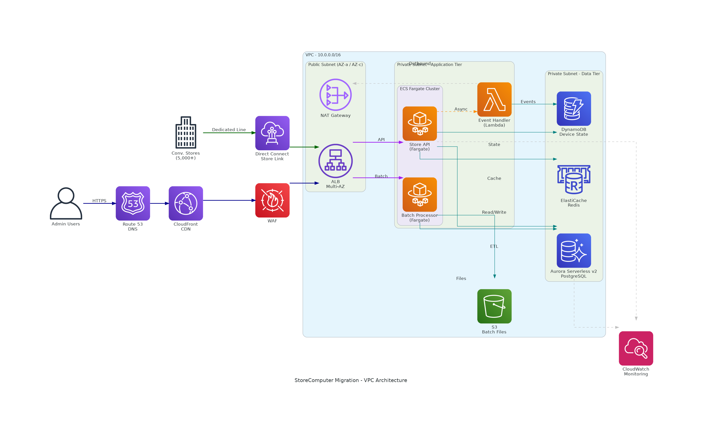

コンビニエンスストアのストアコンピューターをオンプレミス→AWSクラウドに移行するための基本VPCアーキテクチャ。全国5,000店舗以上の店舗端末（ストアコンピューター）からのデータを受け付け、発注・在庫・売上等の業務処理をクラウド上で実行する。
VPCの基本設計として、Public Subnet（ALB/NAT GW）とPrivate Subnet（Application Tier / Data Tier）を分離し、外部アクセスはCloudFront+WAFとDirect Connectの2経路で制御する。24/365稼働のコンビニ業務を支えるため、Multi-AZ構成で高可用性を確保する。
Admin 管理者アクセス
Store 店舗からのアクセス（専用線）
Sync データアクセス（同期）
Batch バッチ処理
Async 非同期イベント処理
| レイヤー | AWSサービス | 用途 |
|---|---|---|
| Edge / Security | Route 53 | DNS名前解決・ヘルスチェック |
| Edge / Security | CloudFront | CDN・DDoS防御（Shield Standard）・HTTPS終端 |
| Edge / Security | WAF | Webアプリケーションファイアウォール（SQLi/XSS防御） |
| Store Connectivity | Direct Connect | 店舗↔AWS間の専用線接続（低遅延・高帯域） |
| Public Subnet | ALB (Multi-AZ) | HTTP/HTTPSリクエストのルーティング・ヘルスチェック |
| Public Subnet | NAT Gateway | Private Subnetからのアウトバウンド通信（パッチ取得等） |
| Private Subnet (App) | Fargate - Store API | ストコンAPIサーバ（発注・在庫・売上処理） |
| Private Subnet (App) | Fargate - Batch Processor | 日次/月次バッチ処理（売上集計・発注計算） |
| Private Subnet (App) | Lambda - Event Handler | 非同期イベント処理（デバイス状態更新等） |
| Private Subnet (Data) | Aurora Serverless v2 (PostgreSQL) | メインDB（発注・在庫・売上データ） |
| Private Subnet (Data) | DynamoDB | デバイス状態管理（高スループット・低レイテンシー） |
| Private Subnet (Data) | ElastiCache Redis | セッション/マスタキャッシュ（商品マスタ等） |
| Storage | S3 | バッチファイル・帳票・ログアーカイブ |
| Monitoring | CloudWatch | メトリクス・ログ・アラーム監視 |
1. Public / Private Subnet の分離
ALBとNAT GatewayのみをPublic Subnetに配置し、アプリケーションとデータベースはすべてPrivate Subnetに隔離する。これにより、インターネットからの直接アクセスを遮断し、セキュリティを確保する。ストコンは決済データ（PCI DSS対象）を扱うため、この分離は必須。
2. Direct Connect による店舗接続
5,000+店舗からの常時接続をインターネットVPNではなくDirect Connectで実現。低遅延・高帯域・安定した接続品質を確保する。コンビニの発注・検品・POS精算はリアルタイム性が求められるため、専用線接続が適切。
3. Aurora Serverless v2 の採用
ストコンの負荷は時間帯によって大きく変動する（早朝の発注ピーク、深夜の低負荷）。Aurora Serverless v2は0.5〜128 ACUの範囲で自動スケールし、負荷変動に追従しつつコストを最適化する。
4. DynamoDB + ElastiCache の補完的活用
デバイス状態（ストコンのオンライン/オフライン、最終通信時刻等）はDynamoDBに格納し、ミリ秒単位の応答を実現。商品マスタ等の参照頻度が高いデータはElastiCache Redisでキャッシュし、Auroraへの負荷を軽減する。
5. CloudFront + WAF によるエッジ保護
管理画面等のインターネット経由アクセスはCloudFront + WAFで保護する。WAFでSQLインジェクション・XSS・レートリミットを適用し、CloudFrontのShield StandardでL3/L4 DDoSを自動緩和する。
ap-northeast-1 (東京) リージョン基準の月額概算。実際の費用は利用量により変動します。
為替レート: $1 = 150円（参考値）
| サービス | 構成 | Dev (月額) | Prod (月額) |
|---|---|---|---|
| Route 53 | Hosted Zone + クエリ | $1 (150円) | $5 (750円) |
| CloudFront | CDN配信 | $1-5 (150-750円) | $20-50 (3,000-7,500円) |
| WAF | Web ACL + ルール | $7 (1,050円) | $15-30 (2,250-4,500円) |
| Direct Connect | 1Gbps ポート + データ転送 | $220 (33,000円) | $220-350 (33,000-52,500円) |
| ALB | Multi-AZ | $20 (3,000円) | $25-50 (3,750-7,500円) |
| NAT Gateway | 1 AZ | $35 (5,250円) | $70-100 (10,500-15,000円) |
| Fargate (Store API) | 1 vCPU 2GB (Dev) / 2 vCPU 4GB x2 (Prod) | $40 (6,000円) | $160 (24,000円) |
| Fargate (Batch) | 0.5 vCPU 1GB (Dev) / 1 vCPU 2GB (Prod) | $20 (3,000円) | $40 (6,000円) |
| Lambda | Event Handler | $0-5 (0-750円) | $5-20 (750-3,000円) |
| Aurora Serverless v2 | 0.5-2 ACU (Dev) / 2-16 ACU Multi-AZ (Prod) | $50-100 (7,500-15,000円) | $200-400 (30,000-60,000円) |
| DynamoDB | On-Demand | $5-20 (750-3,000円) | $20-100 (3,000-15,000円) |
| ElastiCache Redis | Serverless | $25-50 (3,750-7,500円) | $90-150 (13,500-22,500円) |
| S3 | 100GB | $2-3 (300-450円) | $3-5 (450-750円) |
| CloudWatch | Logs + Metrics + Alarms | $5 (750円) | $20-40 (3,000-6,000円) |
| 合計 | $431-533 (約64,650-79,950円) | $893-1,500 (約133,950-225,000円) | |
前提条件: 24/7稼働、ap-northeast-1、Direct Connect 1Gbpsポート、店舗数5,000+、データ転送量 月500GB想定
コスト最適化のポイント: Direct Connectは複数案件共用で按分可能、Fargate Savings Plans (1年)で最大20%削減、Aurora Serverless v2の夜間自動スケールダウン、Dev環境のDirect Connect共用
最終更新: 2026-04-01 | AWS Diagram MCP + Architecture Review Pass (6/6)